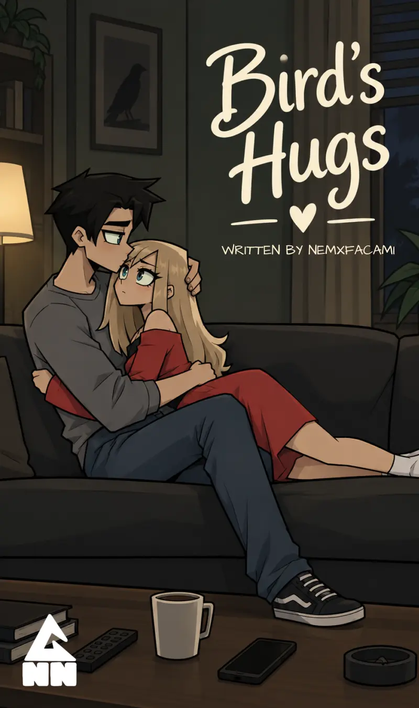
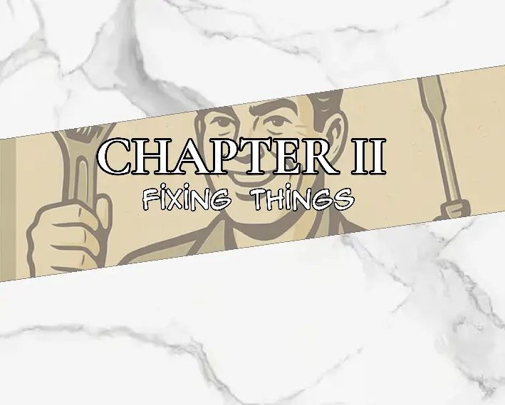

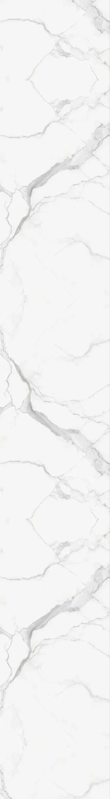

Maze woke up to the pale light of morning slipping through the curtains.
For a few seconds, she simply stared at the ceiling.
She wasn't sure what had woken her. There was no shouting from the sitting room, no television blaring some ridiculous cartoon, no sound of Johan arguing with her mother. The house was unusually quiet.
She reached for her phone.
The screen immediately lit up with notifications.
JOBLESS — 7 NEW NOTIFICATIONS
Maze stared at it.
She already knew what they were.
She opened the application anyway.
One after another, she scrolled through the notifications.
Some were old applications being updated. Some were automated messages. Others were companies she didn't even remember applying to anymore.
She opened one.
Your application has been received.
Another.
Your application is currently under review.
Another.
Unfortunately, we have decided to proceed with other candidates.
Maze stared at the last one for a few seconds before scrolling past it.
There were more.
Always more.
She had spent so long applying for jobs that sometimes the names of the companies meant absolutely nothing to her anymore.
She switched over to social media.
Pictures.
Videos.
People eating.
People travelling.
People celebrating birthdays.
People complaining about their jobs.
People posting pictures of their new cars.
People posting pictures of their old cars.
People arguing about things Maze didn't care about.
She scrolled.
And scrolled.
And scrolled.
Her eyes felt heavy.
It was strange.
She had literally just woken up, yet she already felt exhausted.
Maze finally locked the phone and tossed it onto the bed beside her.
It landed face-down on the blanket.
"Fuck."
She sat up.
Her hair was a mess, and her mouth tasted stale. She rubbed her face with both hands before getting out of bed.
The floor was cold beneath her feet.
She walked to the bathroom, shut the door behind her, and took care of herself.
Afterward, she changed into something comfortable and left her room.
The walkway leading toward the sitting room was quiet.
Too quiet.
Maze slowed down as she reached the doorway.
Her mother wasn't there.
Neither was Johan.
The couch was empty.
The television was off.
There were no empty cans scattered across the floor.
No cigarette smoke hung in the air.
The room was clean.
Maze stood there for a moment, looking around.
"Huh."
She wasn't sure whether she should be relieved or worried.
Yesterday, the place had looked terrible.
Today it looked almost normal.
She glanced toward the hallway.
"Hope they're okay."
She didn't know where they had gone.
And, honestly, she wasn't sure she wanted to know.
Maze walked into the kitchen and opened the refrigerator.
For once, there was food inside.
Not much, but enough.
She had bought it yesterday with the last of her money.
She looked at the shelves.
Bread.
A few things she'd picked up from the store.
Enough to eat.
Nothing left in her wallet.
She closed the refrigerator.
"Well..."
At least she wouldn't be hungry today.
She prepared herself something to eat and carried it into the sitting room.
Maze sat down in front of the television and turned it on.
The screen illuminated the otherwise quiet room.
She changed channels.
Nothing.
Changed again.
Nothing.
Again.
A movie she'd already watched.
Another movie she'd already watched.
Some reality show she had absolutely no interest in.
A cartoon.
A rerun of a series she had finished months ago.
She sighed and continued pressing the button.
"There's literally nothing to watch."
She stopped at a movie for a few seconds.
She had seen it.
Of course she'd seen it.
She kept going.
It was getting harder to find things she actually wanted to watch anymore.
There had been a time when turning on the television could consume an entire day.
Now she could spend twenty minutes searching and still find absolutely nothing interesting.
Maze leaned back into the couch, chewing slowly.
"Maybe I should get Wi-Fi."
The thought lingered.
It would make things easier.
She could watch whatever she wanted. Find new movies. Search for things. Maybe even learn something. She wouldn't have to depend on whatever happened to be playing on television.

Then reality immediately followed the thought.
Wi-Fi cost money.
Money she didn't have.
"One day."
She took another bite.
"Maybe."
She finished eating and carried the plate into the kitchen.
She turned on the tap.
Water rushed into the sink as she washed the plate and spoon, the sound echoing softly through the otherwise empty house.
When she finished, she dried her hands and looked around the kitchen.
Everything was still clean.
The sitting room was clean too.
She had spent most of yesterday cleaning the house.
Maze looked toward the living room again.
"Nope."
She shook her head.
"I'm not cleaning today."
She had already done enough.
Besides, there wasn't really anyone here to make a mess anyway.
Maze stood in the kitchen for a moment, listening to the quiet.
Her mother and Johan were gone.
Nobody else ever came over unless her mother was around.
No friends knocking at the door.
No neighbours dropping by.
No unexpected visitors.
Just her.
The house suddenly felt much bigger when she was alone in it.
Maze walked back into the sitting room and dropped herself onto the couch.
The television continued playing something she wasn't watching.
She stared ahead.
For the moment, there was nothing she needed to clean.
Nothing she needed to fix.
Nobody asking anything from her.
Just another morning.
Maze eventually got tired of sitting around.
The television was still on, but she wasn't really watching it anymore.
The same voices continued coming from the speakers while sunlight slowly moved across the floor.
She looked toward the window.
The morning outside looked inviting.
Maybe the advertisement from yesterday had been right.
An early morning walk couldn't hurt.
Maze stood up.
She grabbed her phone and slipped it into her pocket before walking toward the front door.
A moment later, she stepped outside.
The sunlight immediately touched her face.
Warm.
Bright.
Almost comforting.
Maze squinted slightly as she looked up at the sky.
The air outside felt completely different from the air inside the house.
Fresh.
There were cars moving along the road, their engines humming as they passed. People were already out doing their own things. Someone was carrying groceries. A woman walked quickly down the pavement while talking on her phone.
A cyclist passed her.
Then another.
Further ahead, Maze noticed a man jogging toward her.
He looked like someone who took exercising seriously.
Shorts.
Running shoes.
Headphones covering his ears.
His arms moved rhythmically as he ran, and the muscles in his legs tightened with every step.
Maze glanced at him as he passed.
He looked good.
She continued walking.
A few metres ahead, a woman had stopped beside the pavement to fix her shoe.
She bent down, tying the loose lace while the jogger approached from behind.
As he passed her, his eyes briefly shifted toward her before he looked away again.
A small smile appeared on his face.
Maze noticed.
She shook her head slightly.
"Men."
She looked down at herself.
Baggy shirt.
Loose trousers.
Nothing revealing.
Comfortable, but hardly fashionable.
Maze tugged lightly at the bottom of her shirt.
Sometimes she wondered what it would be like to wear something different.
Something tighter.
Something that actually showed her figure.
She wouldn't mind looking good.
Maybe even getting some attention.
But she wasn't sure it would suit her.
She already felt like the clothes she wore made her look somewhat tomboyish.
Maybe that was just how she saw herself.
She shrugged.
"Whatever."
She kept walking.
The further she went, the quieter the streets became.
Eventually, the familiar surroundings started changing.
The buildings became less crowded.
The roads became wider.
The number of cars decreased.
She had reached EddiesMadisons Street.
It marked the beginning of the suburban area.
Maze slowed her pace.
There was something peaceful about this part of the city.
The streets were clean.
Trees stood along the sidewalks.
Large houses sat behind fences and gates.
Some had carefully maintained gardens.
Others had tall walls that completely hid the properties from the road.
There were fewer people here.
Much fewer.
Most seemed to spend their time inside their homes.
Maze walked slowly along the pavement.
A car passed her.
Then another.
After that, the street became quiet again.
She looked toward one of the houses.
The curtains were closed.
Another house had no lights on.
Another had a perfectly maintained garden but no one anywhere outside.
Some of these houses were occupied by people who barely seemed to exist outside their walls.
Others belonged to people who were constantly travelling.
A house could remain empty for weeks.
Sometimes months.
Sometimes even longer.
The owners could spend an entire month somewhere else.
Or a year.
And their houses simply remained there.
Silent.
Waiting.
Maze continued walking through the peaceful streets.
She had no destination.
For once, she didn't need one.
She was simply walking.
The sunlight warmed her skin.
The breeze moved gently through her hair.
And with every step, the noise and clutter of her ordinary life seemed to become a little further away.
Maze eventually got tired of sitting around.
The television was still on, but she wasn't really watching it anymore.
The same voices continued coming from the speakers while sunlight slowly moved across the floor.
She looked toward the window.
The morning outside looked inviting.
Maybe the advertisement from yesterday had been right.
An early morning walk couldn't hurt.
Maze stood up.
She grabbed her phone and slipped it into her pocket before walking toward the front door.
A moment later, she stepped outside.
The sunlight immediately touched her face.
Warm.
Bright.
Almost comforting.
Maze squinted slightly as she looked up at the sky.
The air outside felt completely different from the air inside the house.
Fresh.
There were cars moving along the road, their engines humming as they passed. People were already out doing their own things. Someone was carrying groceries. A woman walked quickly down the pavement while talking on her phone.
A cyclist passed her.
Then another.
Further ahead, Maze noticed a man jogging toward her.
He looked like someone who took exercising seriously.
Shorts.
Running shoes.
Headphones covering his ears.
His arms moved rhythmically as he ran, and the muscles in his legs tightened with every step.
Maze glanced at him as he passed.
He looked good.
She continued walking.
A few metres ahead, a woman had stopped beside the pavement to fix her shoe.
She bent down, tying the loose lace while the jogger approached from behind.
As he passed her, his eyes briefly shifted toward her before he looked away again.
A small smile appeared on his face.
Maze noticed.
She shook her head slightly.
"Men."
She looked down at herself.
Baggy shirt.
Loose trousers.
Nothing revealing.
Comfortable, but hardly fashionable.
Maze tugged lightly at the bottom of her shirt.
Sometimes she wondered what it would be like to wear something different.
Something tighter.
Something that actually showed her figure.
She wouldn't mind looking good.
Maybe even getting some attention.
But she wasn't sure it would suit her.
She already felt like the clothes she wore made her look somewhat tomboyish.
Maybe that was just how she saw herself.
She shrugged.
"Whatever."
She kept walking.
The further she went, the quieter the streets became.
Eventually, the familiar surroundings started changing.
The buildings became less crowded.
The roads became wider.
The number of cars decreased.
She had reached EddiesMadisons Street.
It marked the beginning of the suburban area.
Maze slowed her pace.
There was something peaceful about this part of the city.
The streets were clean.
Trees stood along the sidewalks.
Large houses sat behind fences and gates.
Some had carefully maintained gardens.
Others had tall walls that completely hid the properties from the road.
There were fewer people here.
Much fewer.
Most seemed to spend their time inside their homes.
Maze walked slowly along the pavement.
A car passed her.
Then another.
After that, the street became quiet again.
She looked toward one of the houses.
The curtains were closed.
Another house had no lights on.
Another had a perfectly maintained garden but no one anywhere outside.
Some of these houses were occupied by people who barely seemed to exist outside their walls.
Others belonged to people who were constantly travelling.
A house could remain empty for weeks.
Sometimes months.
Sometimes even longer.
The owners could spend an entire month somewhere else.
Or a year.
And their houses simply remained there.
Silent.
Waiting.
Maze continued walking through the peaceful streets.
She had no destination.
For once, she didn't need one.
She was simply walking.
The sunlight warmed her skin.
The breeze moved gently through her hair.
And with every step, the noise and clutter of her ordinary life seemed to become a little further away.
Maze held the phone against her ear.
The line rang.
Once.
Twice.
Three times.
She waited.
Nothing.
The call eventually ended.
Maze lowered the phone and stared at the screen.
"Seriously?"
She looked toward the house again.
Maybe nobody was working.
She tried the number again.
This time she waited longer.
Still nothing.
Maze sighed and lowered the phone.
"Okay, I tried."
She turned around and started walking away.
Her phone suddenly vibrated.
Maze stopped.
She looked at the screen.
INCOMING CALL — HOMELOOKERS
She answered immediately.
"Hello?"
"Hi, sorry about that. You called us?"
"Yeah."
Maze glanced back at the property.
"Two guys just broke the fence of one of your houses."
There was a short pause on the other end.
"Sorry, what?"
"Two guys. They were chasing each other and they jumped over the fence. One of them got over, but when the other one tried, the fence just fell."
Maze looked at the collapsed section.
"And then they ran behind the house. I heard a window break too."
The man on the phone became more alert.
"Okay. What's the house number?"
Maze turned toward the gate.
She stepped closer to make sure.
"Two hundred and twenty-four."
"224?"
"Yeah."
"And that's EddiesMadisons?"
Maze looked at the street sign nearby.
"Yes."
There was another pause.
Then the man's voice changed.
"Oh, shit."
Maze frowned.
"What?"
"I'll be there."
"Okay..."
"Please don't leave."
Maze looked at the empty street.
"I won't."
"Thank you."
The call ended.
Maze slowly lowered her phone.
She looked at the broken fence again.
Then at the house.
She had no idea why the number had made him react like that.
She slipped her phone back into her pocket.
"Well..."
She walked toward the gate again.
Apparently, she was staying.
Maze waited.
And waited.
Thirty minutes had passed since the phone call.
She spent most of the time standing near the pavement, occasionally checking her phone and occasionally looking at the house.
The two men were long gone.
The street had returned to its usual quietness.
For a moment, Maze wondered if she had been stupid for staying.
Then she heard the sound of an engine approaching.
A white van came slowly down the street.
Written across the side in large letters was:
HOMELOOKERS SERVICES
Maze looked up from her phone.
The van pulled over beside the property and stopped.
The driver's door opened.
A man stepped out.
He wore a simple grey shirt and trousers. Nothing particularly impressive about him. He looked tired.
Very tired.
He closed the door and looked toward the broken fence.
"Morning."
"Morning."
The man rubbed his face and exhaled.
"I see there's a problem here."
Maze looked at him.
"You look like you just woke up."
The man stared at her for a second.
Then laughed.
"I did."
Maze smiled slightly.
"Seriously?"
"Yeah."
He rubbed his eyes again.
"I sleep late."
He looked toward the house.
"And I don't get much peace anyway. I'm basically responsible for everything."
Maze nodded.
"I understand."
She didn't know why she said it.
Maybe because she understood what it was like to wake up already tired.
The man pulled out his phone.
"Let me call the boss."
He tapped the screen and waited.
The call connected.
"Morning, boss."
He paused.
"We have a problem here."
A sleepy voice came from the other end.
"What problem?"
The man looked at the broken fence.
"224."
There was silence.
Then the boss spoke again.
"Talk to the manager."
The call ended.
The man stared at his phone.
Maze watched him.
He looked at the house again.
Then the fence.
Then the phone.
"What's wrong?"
"The boss said I should talk to the manager."
He sighed.
"Problem is, the manager isn't available."
"Why?"
"He's the boss's cousin."
Maze raised an eyebrow.
"Oh."
"Yeah."
The man shook his head.
"He takes a lot of holidays."
Maze looked at the broken fence.
"So basically..."
She pointed at him.
"You're the manager?"
The man thought about it.
Then nodded.
"Basically."
Maze smiled.
"That sucks."
He laughed.
"Yeah. It does."
He walked through the broken section of fence and into the yard.
Maze watched him inspect the damage.
He crouched beside the fallen fence, examined the broken wood, then looked toward the shattered window.
He stood up and walked around the side of the house.
Maze waited.
A few minutes later, she checked her phone.
She had already spent enough time here.
"Well, I should probably go."
She turned around.
"Thanks for calling us," the man said from somewhere behind the house.
"You're welcome."
Maze began walking away.
She had barely gone a few steps when she heard:
"Wait!"
Maze stopped.
She looked over her shoulder.
The man had come back through the broken fence.
"Hey!"
Maze pointed at herself.
"Me?"
"Yeah."
He waved her back.
Maze walked toward him.
"What is it?"
The man looked at her for a moment.
Then casually asked:
"Do you want a job?"
Maze froze.
"...What?"
"A job."
She stared at him.
The question seemed so random that for a second she wondered if she had heard him correctly.
"Yes."
The answer came almost immediately.
"Yes, I do."
The man nodded.
"Well, you're hired."
Maze's eyes widened.
"Really?"
"Yeah."
She looked toward the house.
"Wait. What about the manager?"
The man shrugged.
"He just gave me permission to hire."
Maze stared at him.
"He did?"
"Yeah."
"He literally just told you to talk to the manager."
"That's true."
The man thought about it.
"Yeah, he did just tell me that."
Maze laughed.
The man laughed too.
For the first time in a while, Maze felt something she hadn't felt when she woke up that morning.
Relief.
She hadn't applied.
She hadn't filled out an application.
She hadn't sat across from someone trying to explain why she deserved a chance.
She had simply gone for a walk.
And somehow, she had gotten a job.
The man held out his hand.
"I'm Cragg."
Maze shook it.
"Maze."
"Nice to meet you, Maze."
"Nice to meet you too."
Maze looked back toward the damaged house.
The broken fence.
The shattered window.
Then at Cragg.
"So..."
She pointed toward the property.
"How are we going to fix all this?"
Cragg looked at the mess.
He sighed.
"That's a good question."
And for the first time in a long time, Maze had somewhere she needed to be.

.png)